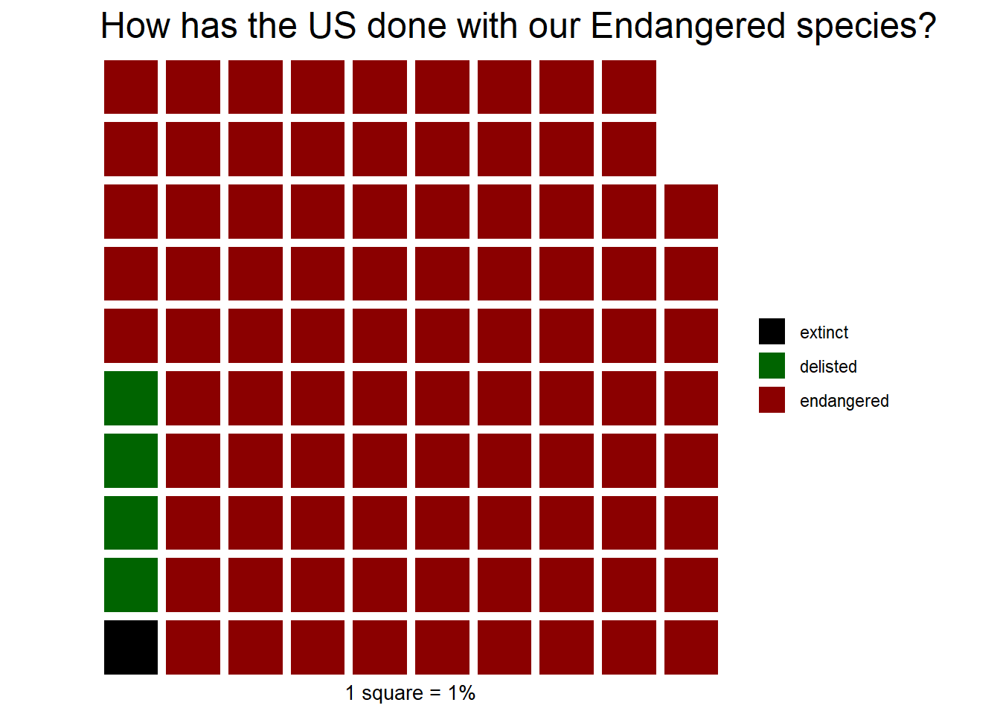

library(tidyverse)
library(gt)
library(skimr)
library(waffle)30 Day Chart Challenge- Endangered Species
R
R-code
code-along
30DayChartChallenge
waffle
How many species have been delisted?
It is Day 4 of the #30DayChartChallenge. More info can be found at the challenge’s Github page. Today’s theme is history. But this is a subtheme of “comparisions”, so I’d like to avoid doing a simple time series.
I decided to look at the endangered species list the US Fish and Wildlife Service maintains. They have a bunch of data spread over multiple tables. I decided to look at the 5 year review data. A 5 year review is the assessment to decide if a species remains list or delisted. The dataset also contains the year the species was first listed. So I’d like to compare how many species have been listed vs. delisted.
The key to the different listing types is found here.
Today, I’m was going to load the data directly from the website. I’ve been downloading it and reading it in from a local folder, but I thought it would be nice to download directly. However, the data uses a “blob:” url, which is not donwloadable directly. There is a way around this but then you have to process some JSON data. I”ll come back to this later, but for now, I’m just going to use a csv.
endangered_df <- read_csv("five_year.csv", show_col_types = FALSE)endangered_df_sub <- endangered_df %>%
select(name = `Common Name`,
status = `ESA Listing Status`,
date = `Listing Date`,
rec = `5YSR Recommendation`)Let’s see what kind of categories we have.
endangered_df_sub <- endangered_df_sub %>%
mutate(status = factor(status), rec = factor(rec))Skim this bad boy.
skim(endangered_df_sub) %>% gt()| skim_type | skim_variable | n_missing | complete_rate | character.min | character.max | character.empty | character.n_unique | character.whitespace | factor.ordered | factor.n_unique | factor.top_counts | numeric.mean | numeric.sd | numeric.p0 | numeric.p25 | numeric.p50 | numeric.p75 | numeric.p100 | numeric.hist |
|---|---|---|---|---|---|---|---|---|---|---|---|---|---|---|---|---|---|---|---|
| character | name | 0 | 1 | 3 | 51 | 0 | 1159 | 0 | NA | NA | NA | NA | NA | NA | NA | NA | NA | NA | NA |
| factor | status | 0 | 1 | NA | NA | NA | NA | NA | FALSE | 8 | E: 1173, T: 316, DM: 35, DNS: 3 | NA | NA | NA | NA | NA | NA | NA | NA |
| factor | rec | 0 | 1 | NA | NA | NA | NA | NA | FALSE | 7 | No : 1389, Del: 49, Dow: 40, Del: 27 | NA | NA | NA | NA | NA | NA | NA | NA |
| numeric | date | 0 | 1 | NA | NA | NA | NA | NA | NA | NA | NA | 1993.5 | 12.4735 | 1967 | 1987 | 1993 | 1999 | 2017 | ▂▃▇▂▃ |
rec
summary(endangered_df_sub$rec) Delist: The listed entity does not meet the statutory definition of a species
8
Delist: The species does not meet the definition of an endangered species or a threatened species
49
Delist: The species is extinct
27
Downlist to T
40
No change in Status
1389
Revision of listed entity
2
Uplist to E
18 The recommendations don’t always match the current status. I’m assuming the recommendations will be enacted/adopted eventually, so I am using them as the correct current status.
We have 7 levels in recommendations. We need to consolidate them. I’m going to combine “Delist: The listed entity does not meet the statutory definition of a species” and “Delist: The species does not meet the definition of an endangered species or a threatened species” into a level called delisted. The delisting because the species is extinct will be made into a level called extinct later.
endangered_df_sub <- endangered_df_sub %>%
mutate(condensed = fct_collapse(rec, delisted = c("Delist: The listed entity does not meet the statutory definition of a species",
"Delist: The species does not meet the definition of an endangered species or a threatened species")
))I’m going to count both “Downlist to threatened” and “uplist to Endangered” as endangered. I don’t know the original listing level, so it doesn’t make too much difference to me.
endangered_df_sub <- endangered_df_sub %>%
mutate(condensed = fct_collapse(condensed, endangered = c("Downlist to T",
"Uplist to E") ))Now, I’m pulling in the status for the entries that have “No change in Status” as the recommendation. I’m using a case_when and listing every combination. I could get this done if fewer lines if I used or statements (E or T is endangered), but I left it more granular in case I wanted to come back and change the levels. Maybe later I do care about the different between threatened and endangered and want to break them out separately.
endangered_df_sub <- endangered_df_sub %>%
mutate(condensed = case_when(
condensed == "No change in Status" & status == "E" ~ "endangered",
condensed == "No change in Status" & status == "T" ~ "endangered",
condensed == "No change in Status" & status == "RT" ~ "delisted",
condensed == "No change in Status" & status == "D3A" ~ "extinct",
condensed == "No change in Status" & status == "DM" ~ "delisted",
condensed == "No change in Status" & status == "DP" ~ "delisted",
condensed == "No change in Status" & status == "DR" ~ "delisted",
condensed == "No change in Status" & status == "DNS" ~ "delisted",
condensed != "No change in Status" ~ condensed)
)Now I’m going to group my extincts.
endangered_df_sub <- endangered_df_sub %>%
mutate(condensed =
fct_collapse(condensed, extinct =
c("Delist: The species is extinct", "extinct")))I’m not sure what : Revision of listed entity means. I’m going to see if there are comments back in the full dataset.
endangered_df %>%
filter(`5YSR Recommendation` == "Revision of listed entity") %>% gt()| Scientific Name | Common Name | Where Listed | ESA Listing Status | Lead Region | Listing Date | Most Recently Completed 5YSR | 5YSR Recommendation | Notice of In Progress 5YSR | Notice Date of In Progress 5YSR | Group |
|---|---|---|---|---|---|---|---|---|---|---|
| Rangifer tarandus ssp. caribou | Caribou DPS, Southern Mountain | <div>Southern Mountain DPS</div> | E | 1 | 1983 | 2019-10-02 | Revision of listed entity | No Five Year Review In Progress | NA | Mammals |
| Cereus eriophorus var. fragrans | Prickly-apple, fragrant | <div></div> | E | 4 | 1985 | 2021-10-19 | Revision of listed entity | No Five Year Review In Progress | NA | Flowering Plants |
I’m not seeing any explanation. There is not an entry in the code key either.
Okay, now for a visualization. This actually seems perfect for a waffle. I’ve had bad luck with the waffle package, but know how to make it output something now. So, I will try waffling again. I did try a different package (ggwaffle) that also doesn’t work. It does let you use a dataframe, but it also doesn’t handle large numbers well. It soes let you downsample the data if the numbers are too large, but I’d rather just process the data myself to make it waffle.
So, first I need to summarize the data to get the counts per class.
progress <- endangered_df_sub %>%
count(condensed)
progress %>%
gt() %>%
cols_label(condensed = "Status", n = "Number of species") %>%
opt_stylize(style = 6, color = "blue", add_row_striping = TRUE) %>%
tab_header(title = "Progess of Endangered/Threatened species")| Progess of Endangered/Threatened species | |
| Status | Number of species |
|---|---|
| extinct | 27 |
| delisted | 64 |
| endangered | 1440 |
| Revision of listed entity | 2 |
Now let’s change to percentages for optimal waffling
num_species <- nrow(endangered_df_sub)
progress_percent <- progress %>%
mutate(n = ( n/num_species) * 100)
progress_percent <- progress_percent %>%
mutate(n = round(n,1))
gt(progress_percent) %>%
cols_label(condensed = "Status", n = "% of species") %>%
opt_stylize(style = 6, color = "blue", add_row_striping = TRUE) %>%
tab_header(title = "Progess of Endangered/Threatened species") | Progess of Endangered/Threatened species | |
| Status | % of species |
|---|---|
| extinct | 1.8 |
| delisted | 4.2 |
| endangered | 93.9 |
| Revision of listed entity | 0.1 |
#Values below 1 won't show in a waffle graph anyway, so remove them.
progress_percent <- progress_percent %>%
filter(n >= 1)The waffle package won’t work with dataframes for me, so make it a vector.
progress_vec = deframe(progress_percent)waffle::waffle(progress_vec, colors = c("black", "darkgreen", "darkred"),
title = "How has the US done with our Endangered species?",
xlab = "1 square = 1%") 
Citation
BibTeX citation:
@online{sinks2023,
author = {Sinks, Louise E.},
title = {30 {Day} {Chart} {Challenge-} {Endangered} {Species}},
date = {2023-04-04},
url = {https://lsinks.github.io/posts/2023-04-04-chart-challenge-4/day4.html},
langid = {en}
}
For attribution, please cite this work as:
Sinks, Louise E. 2023. “30 Day Chart Challenge- Endangered
Species.” April 4, 2023. https://lsinks.github.io/posts/2023-04-04-chart-challenge-4/day4.html.